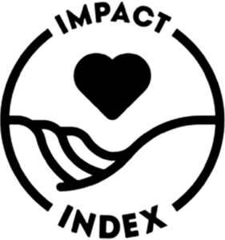

Trade Mark Journal No.2025/030 25 July 2025
WO0000001853069 (35,42)
Office of origin: United States of America
Date of International Registration:20 March 2024
Date of designation in the UK:
20 March 2024

The mark consists of of a circle with the the wording "IMPACT" on the top and the images of a hand with a heart in the middle and the wording "INDEX" on the bottom of the circle.
International priority date claimed: 21 September 2023
(United States of America)
(98191241)
- Class 35
- Compiling raw material, animal welfare, chemical usage, education and empowerment, or other sustainability, environmental, and equity information for business purposes; providing business information in the field of sustainability, environmentalism, and equity; conducting business research in the field of sustainability, environmentalism, and equity; business data analysis services in the fields of sustainability, environmentalism, and equity; conducting business surveys in the fields of sustainability, environmentalism, and equity; conducting market surveys in the fields of sustainability, environmentalism, and equity; conducting consumer surveys in the fields of sustainability, environmentalism, and equity; providing independent ratings and reviews, of businesses in the fields of sustainability, environmentalism, and equity for business purposes; business information services, namely, providing information about raw material, animal welfare, chemical usage, education and empowerment, or other sustainability, environmental, and equity information; preparation of market surveys analysis of market research data and statistics; analyzing and compiling data regarding sustainability, environmentalism, and equity derived from surveys, polls, market research, and social media; business information; business auditing; business consultation; business data analysis; commercial information and business advice for consumers, compilation of statistical information in the fields of environmentalism, sustainability, and equity for business purposes; business research services, namely, research and screening of companies' and institutions' sustainability and equity based on environmental, social, and governance criteria; promoting public awareness of and interest in social and environmental issues; promoting public interest and awareness of environmentally responsible business practices by identifying businesses with policies and practices that benefit the environment; providing an online database of information concerning businesses and environmentally responsible business practices; compilation of business information into computer databases; rating the environmental qualities and impact impact of consumer products of others for the purpose of making purchasing decisions; promoting the goods and services of others through search engine referral traffic analysis and reporting; providing business information about raw material, animal welfare, chemical usage, education and empowerment, or other sustainability, environmental, and equity information for business purposes via a website; providing business reports and research about raw material, animal welfare, chemical usage, education and empowerment, or other sustainability, environmental, and equity information of other companies for business purposes via a website.
- Class 42
- Providing a website featuring information about raw material, animal welfare, chemical usage, education and empowerment, or other sustainability, environmental, and equity information for business purposes (Term considered too vague by the International Bureau pursuant to Rule 13 (2) (b) of the Regulations); providing a website featuring reports, labelling, and research about raw material, animal welfare, chemical usage, education and empowerment, or other sustainability, environmental, and equity information of other companies for business purposes (Term considered too vague by the International Bureau pursuant to Rule 13 (2) (b) of the Regulations).
Rockefeller Philanthropy Advisors, Inc.
Representative: Kilburn & Strode LLP, Lacon London, 84 Theobalds Road, Holborn London WC1X 8NL UNITED KINGDOM